BRMS Introduction – and progress update (Michael Neale)
Well, its been a while since any updates. In the mean time I have moved house, twice, once to Sydney (temporarily) and then back to my home in Queensland, so its been a disruptive period. I have been working out of the wonderful Red Hat Sydney office (North Sydney, photos later – amazing view !), as well as dropping into the Queensland office (no photos, not so scenic).
So, introducing the BRMS: The BRMS has (roughly) 3 aspects:
- BRMS Administrators,
- Users of all kinds, and
- Developers/architects.
These 3 aspects correspond to the 3 groups that will be using it, in many cases there is overlap (ie users could be developers, or users could be non technical, or a developer could be all three !). Keep this rough division in mind when reading through the rest of this introduction (not all the functionality applies to all the groups).
Of course, the pretty stuff you see is just the icing on the web cake, but there is plenty going on underneath, as has been covered before, so I won’t bore you with it. Its important to note that the IDE (as shown previously by mark) forms a part of this (but I won’t cover it here). This, coupled with recently described new features makes for a load of goodness.
The BRMS (starting from an empty state following a rough order in which things may happen): 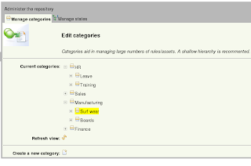
Categories: As mentioned previously, generally you want to start with some categories created to help you find your rules. Categories are completely non technical, in the sense they can be called whatever you want, and do whatever you want, they have no bearing on how the rules work. This would normally be a BRMS Admin type of job.
Status Management: You can use status flags (any item can only have one status at a time, whereas it can have multiple categories) to manage, well, statuses (or statii???). This can effect deployment (if you want it to). The system starts with just a “Draft” status – any new changes are saved as draft status. You can add more to this list. Statuses are applied either on the individual “asset” level, or at a whole “package” level – if you do it at the package level it applies it to all the assets below it. This would normally be an Admin job.
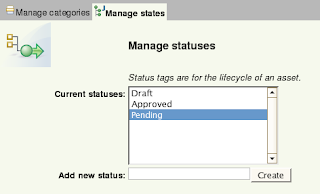
Assets: I have mentioned “assets” – well the short version is that they are really just rules, or a decision table, or a chunk of rules, or a model, or a document – any thing that you want to treat as one controlled, versionable unit (an “atomic” unit if you like). This also includes other config and definition items needed for rules, and in future, things like processes and service definitions. We have a dream. This is a KEY POINT to keep in mind, if your mind is as warped as mine.
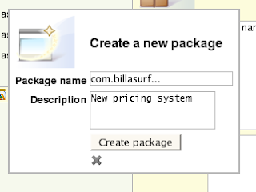
Packages: packages, in this sense, are a physical grouping of rules. This grouping is a bit like a folder, and would certainly make sense to developers and technical users. You can view the world through packages if you like, but as your rules and packages get more numerous, categories can be a more flexible and controlled way of finding rules
/assets.
The package view of the world looks something like the following: 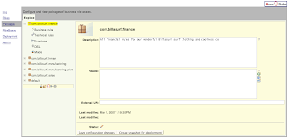
Nice view: I thought I would share a nice picture of the desk I was at in the Sydney office, just to keep everyone interested:
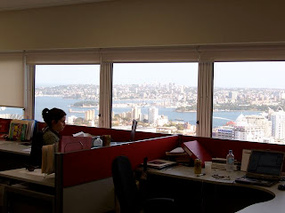
(if you look carefully you will see the tip of the Sydney Opera House).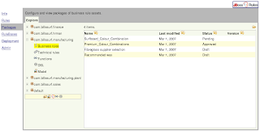
(showing browsing a list of “business rules”)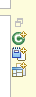
wizards to create new things (packages, models, rules etc) from within the package view of the world. There are tool-tips to tell you what each one does.There are also some other wizards which can help you out with configuring the package, should you need help !
Uploading stuff: Should you need some jar’s for a model, then that respective “asset type” will allow you to upload stuff (uploading automatically creates a new version of something – so you can’t accidentally overwrite it): 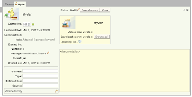 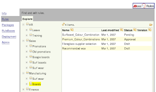
Browsing rules: When you use the rules “tab” – you can use the previously defined categories to navigate lists of rules.
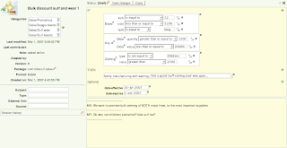
(shot of the modeller in action)
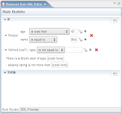
Phew, thats a lotta buttons. On the left hand side of the web view is all the boring “meta data” including lists of categories that the rule belongs to. The bottom right is the all important documentation.
Some people have asked how this is stored: well, as mentioned previously, it depends on the “asset” format itself – the repository is content agnostic in that regards (it can and does store anything, in any format). At the moment the modeller uses XML, but this will most likely be enhanced to be DRL itself, and RuleML (in the case of RuleML, many features will have to be disabled to produce RuleML compliant rules). In any case, you probably don’t really care about that. So its time for another picture:
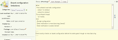
(even DSL rules are in on the action, complete with content assist, many people still like the personal tough you only get with plain text).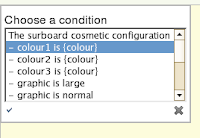
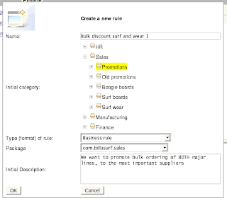
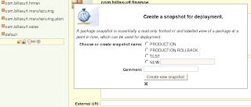
(shows creating a snapshot of a package – either replace existing, or create a new label)(this shows a list of snapshots, from the “deployment” tab) of course this is an Admin feature !
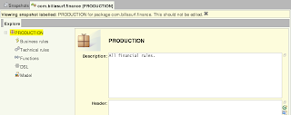
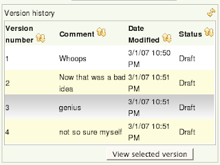
And finally, I will leave with a photo of the Really Cool foyer of the Sydney office: 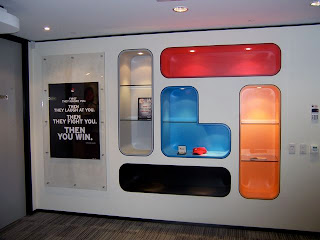
OK, that’s it, that should be sufficient for now.
Enjoy !
PS this is of course available in SVN, we always develop out in the open: drools-repository and drools-jbrms are the models for anyone crazy enough.
Michael.

{kind=link}
{kind=link}
{kind=link}
{kind=link}
{kind=link}
{kind=link}
{kind=link}
{kind=link}
{kind=link}
{kind=link}
{kind=link}
{kind=link}
{kind=link}
{kind=link}
{kind=link}
{kind=link}
{kind=link}
{kind=link}
{kind=link}
{kind=link}